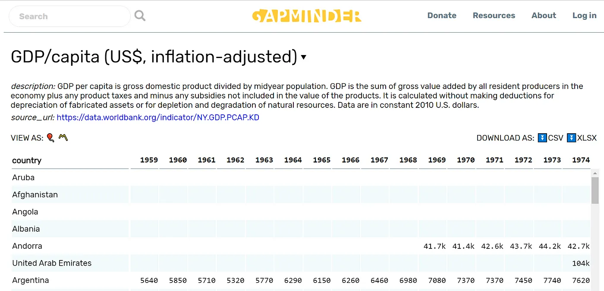
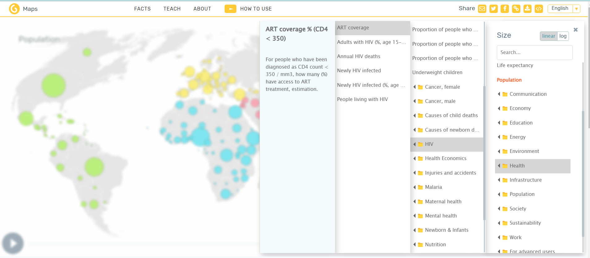
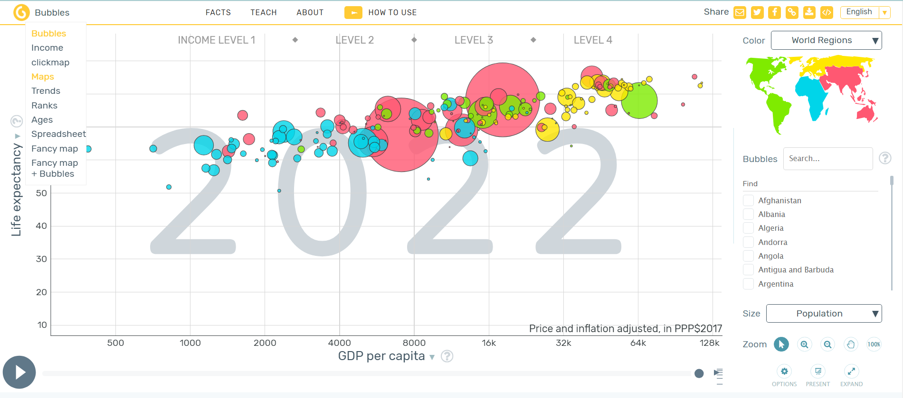

# Demo of how to convert values with string suffixes to numeric
x <- c("12k", "11k", "8900", "8400", "11k", "10k")
x %>%
str_replace_all("k", "e3") %>%
str_replace_all("M", "e6") %>%
as.numeric()[1] 12000 11000 8900 8400 11000 10000This project is a culmination of the skills and knowledge you’ve gained throughout the course. Your task is to create an interactive dashboard published to GitHub Pages, showcasing global statistics in a visually engaging way. You will choose one or several datasets on global indicators from Gapminder or other sources, clean and prepare the data, and create a multi-page quarto dashboard with interactive visualizations.
You should choose one or several datasets on global indicators from Gapminder’s data repository. Gapminder provides a vast repository of country-level statistics on a wide range of topics, including health, education, economy, environment, and gender.
While Gapminder is recommended for its ease of access and breadth of indicators, you are welcome to to explore other datasets that might offer other details. But these must be a global datasets with country-level data. Possible aditional sources are the WHO World Malaria Report, World Bank Open Data, or IHME | GHDx.
Visit the Gapminder’s data repository and browse the indicators from the dropdown menu. You can use the search box to look for topics of interest.
Preview the spreadsheet and read more about the indicator. Ensure the dataset is relatively complete with minimal missing entries, especially in recent years. You can click on the icons in “VIEW AS: 🎈〽️” to visualize the data as a bubble plot or lin

You can also create exploratory visualizations of any indicator with Gapminder tools. By default, it shows bubble plot of Life expectancy vs. GDP per capita, sized by Population, but you can customize the plot by choosing different indicators or different types of visualizations

You can choose different plot types from the dropdown menu at the top left of the page. Maps, Trends, and Ranks are particularly useful visualizations.

Here are a few steps and considerations for selecting your data:
Comprehensiveness: Check for data completeness. Ideally should have at least 10 years with minimal missing entries.
Relevance: Choose data that is up-to-date. Avoid datasets with outdated statistics (e.g., malaria case data is only recorded until 2006).
Relationships: While we require you to choose only one indicator, consider analyzing relationships between two or more indicators. For example, you could compare trends in sanitation levels with child mortality, or how TB incidence correlates with HIV incidence.
Choose indicators that appeal to you and download the data in CSV format using the “DOWNLOAD AS: ⏬CSV” option.
Gapminder also provides country metadata here. This contains useful variables you may want to join with your indicator dataset. Key variables of interest might be:
Country codes: Standardized 3-letter country codes, same as ISO. Useful for joining with other datasets.
Regions: Geographic divisions to group and summarize by. Useful for comparing indicators across continents.
Income groups: Can be converted to an ordered factor variable for visualizing relationships between income level your indicator.
Gapminder indicator datasets are provided in a wide format with one row per country and columns representing years. You will need to pivot this data from wide to long format for easier filtering, grouping, and plotting.
You will likely need to convert string representations of numbers (like “20k” or “2M”) into actual numeric values using the {stringr} package.
# Demo of how to convert values with string suffixes to numeric
x <- c("12k", "11k", "8900", "8400", "11k", "10k")
x %>%
str_replace_all("k", "e3") %>%
str_replace_all("M", "e6") %>%
as.numeric()[1] 12000 11000 8900 8400 11000 10000To avoid data loss during joins, you may need to standardize country names across datasets. You can do this by using the {countrycode} package to align country names with their ISO codes. Or you can join the Gapminder indicator data with the Gapminder geographic metadata by country name, and use the geo column as the ISO code.
We recommend the {rnaturalearth} package to download the country polygons for your world map.
After aligning the country names or ISO codes between your datasets, merge the Gapminder data with the country polygons.
Organize your project repository as follows:
_.Rproj: Rstudio project file.
_.qmd: Main project dashboard.
_.html: Rendered HTML dashboard.
/data: Data folder
/images: Images folder
README.md: (optional) Project description, data sources, and any additional information.
(Since we have not taught you about READMEs and .md files, including a README.md file is optional. However, if you skip it, you should include information about your data sources in your main project dashboard.)
Create your Quarto project and choose appropriate document options, defining the title and author for the navigation bar as well as specifying the use of the dashboard format.
Optionally, you can also include a logo and one or more nav-buttons.
---
title: "DASHBOARD TITLE"
author: "YOUR NAME"
format:
dashboard:
logo: images/LOGO_IMAGE.png
nav-buttons: [github]
github: https://github.com/YOUR_URL
theme: lux
execute:
echo: false
warning: false
message: false
---Set up your environment with the required libraries. You are likely to need the following packages:
# Load packages
if(!require(pacman)) install.packages("pacman")
pacman::p_load(tidyverse,
here,
sf,
bslib,
bsicons,
rnaturalearth,
plotly,
countrycode,
htmltools,
reactable,
janitor
){plotly} or {highcharter}). This should be an interactive choropleth or dot map that allows users to explore your chosen indicator by country and year.Your dashboard should be both informative and engaging, using Quarto features to enhance user experience. Consider the following:
Statistical Highlights: Use value boxes to display key statistics, such as the highest and lowest values for the selected indicator, or significant year-on-year changes. Highlight interesting geographical trends, such as a country that deviates significantly from regional norms.
Professional Aesthetics: Apply an elegant theme and color palette to ensure a professional appearance. Customize plot aesthetics beyond the defaults, and make sure each visualization is accompanied by a descriptive title, clear legends, and annotated axes.
Yearly Data Interaction: We recommend implementing a slider to allow viewers to see changes over time on the map. With {plotly}, you can do this by adding a frame aesthetic to ggplot to create linked views of a series of frames over time. An example is shown below:
gg <- gapminder::gapminder %>%
ggplot(aes(x = gdpPercap, y = lifeExp, color = continent, frame = year)) +
geom_point() +
scale_x_log10() +
theme_minimal()
ggplotly(gg)You should deploy your dashboard to GitHub Pages for easy access and sharing. Consult the lesson on Deploying Dashboards with Quarto for instructions on how to set up your GitHub repository and deploy your dashboard.